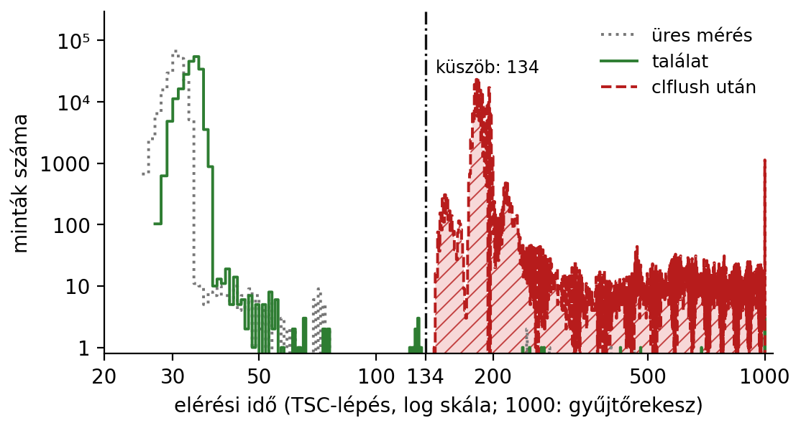

A könyv mérőgépén (i5-13400F, 2026. november 25.; az 1 perces terhelésátlag a mérés elején 1,29 volt, a háttérben egy webböngésző és más asztali programok futottak) egy program a saját tömbjének egy sorát olvasta 200 000-szer úgy, hogy a sor a cache-ben volt, és 200 000-szer úgy, hogy előtte kiürítette. Az időbélyeg-számláló lépéseiben mért medián találatnál 33, kiürítés után 184. Egyetlen küszöbbel (134) a 400 000 mintából mindössze 10 sorolódik rosszul. Az elérési időből tehát szinte tökéletesen kiderül, hogy egy adat a cache-ben volt-e.

clflush utáni hibánál és üres mérésnél (i5-13400F,
2026-11-25; adat: ca076-idozites.csv)Ez a különbség addig hasznos, amíg a teljesítményről szól. De a cache megosztott erőforrás: ha két programrész ugyanazt a cache-t használja, az egyik időzítésből következtethet arra, mit tett a másik. A nem szándékolt információszivárgást mellékcsatornának (side channel) nevezzük. Ez az alfejezet a cache-alapú csatornák elvét mutatja be modellen, és azt, hogyan írunk olyan kódot és rendszert, amely nem szivárogtat.
Etikai keret. A fejezet minden kísérlete a saját
folyamat saját adatát méri, vagy a könyv archkit
szimulátorán fut. Nem tartalmaz más folyamat, megosztott könyvtár vagy a
kernel ellen használható kódot, és nem is erre való. Idegen rendszer
ilyen vizsgálata engedély nélkül jogsértő.
Képzeljünk el egy közös irattartót nyolc fiókkal, mindegyikben két hellyel. Az egyik használó (az áldozat) a titka szerint választ fiókot. A másik (a megfigyelő, a biztonsági irodalomban támadó) nem lát bele a munkájába, de tudja, hogy az irattartó véges: ha előtte mind a tizenhat helyet a saját lapjaival tölti meg, az áldozat kénytelen kiszorítani egyet. Utána a megfigyelő visszaolvassa a saját lapjait, és ahol az egyik eltűnt (a visszakeresés lassú), oda nyúlt az áldozat. A titkot nem olvasta el, csak a helyet látta, de ha a hely a titoktól függ, az elég.
Definíció. Fenyegetési modell (threat model): annak rögzítése, hogy a megfigyelő mit tud, mit futtathat, mit mérhet, és mit akar megtudni. A cache-csatornáknál a jellemző feltevés: a megfigyelő ugyanazon a gépen, ugyanazt a cache-szintet (néha ugyanazt a magot) használva futtat kódot, elég finom időmérővel; az áldozat memóriaelérési mintája titoktól függ. Ha bármelyik feltétel hiányzik, ez a csatorna nem működik, és a védekezés éppen ezeket támadja.
A code/bench/bench_cachetime.cpp időmérő magja
x86-64-en:
__attribute__((noinline)) static std::uint64_t timed_load(const volatile unsigned char* p,
bool load, unsigned& sink) {
unsigned aux;
_mm_mfence();
_mm_lfence();
const std::uint64_t t0 = __rdtsc();
_mm_lfence();
if (load) sink += *p;
const std::uint64_t t1 = __rdtscp(&aux); // megvárja a korábbi utasításokat
_mm_lfence();
return t1 - t0;
}Az __rdtsc az időbélyeg-számlálót (TSC) olvassa; ez
rögzített, a mag órajelétől független ütemben jár (itt 2,496 GHz). Az
lfence utasítások nem engedik, hogy a processzor a mért
betöltést a mérésen kívülre rendezze (Regiszterátnevezés, ROB és spekuláció). A
„kiürített” esetben a program a mérés előtt _mm_clflush-sal
veszi ki a saját sorát a cache-ből; a „üres” mérés a
betöltés nélküli többletet adja. A mérési program:
g++ -O2 -std=c++20 -Wall -Wextra, a 2. magra rögzítve.
Az eredmény értelmezése: az üres mérés mediánja 30 lépés, a találaté 33, a kiürítetté 184. A DRAM-elérés többlete tehát körülbelül ns. A kiürített eloszlás farka hosszú (a 99. percentilis 910 lépés), ami a DRAM sorütközéseiből, a frissítésből és a gép zajából adódhat; a mediánt és nem az átlagot érdemes nézni (Benchmarkolás: mérni tanulni).
Egy küszöbnél a hibaszám:
Szavakkal: azokat a mintákat számoljuk, amelyeket a küszöb a rossz oldalra tesz. A legjobb küszöb minimuma; ha egy egész tartomány egyenlően jó, a közepét választjuk. Más gépen más a küszöb, ezért mindig a saját mérésből kell meghatározni.
Más architektúrákon az elv ugyanaz, az utasítások mások: AArch64-en a
cache-karbantartó utasítások (például DC CIVAC)
felhasználói módbeli elérhetősége az operációs rendszer beállításától
függ, RISC-V-n a Zicbom kiterjesztés ad cbo.flush utasítást
(mindkettő ellenőrizendő). A pontos időmérő korlátozása maga is gyakori
védekezés.
| Módszer | Feltétel | Mit figyel meg? | Felbontás |
|---|---|---|---|
| Flush+Reload [S-FLUSHRELOAD] | közös memória (pl. megosztott könyvtár) és sorürítő utasítás | mely közös sort töltötte be az áldozat | egy cache-sor |
| Prime+Probe | közös cache; nem kell közös memória | mely halmazba nyúlt az áldozat | egy halmaz |
| Evict+Time | a megfigyelő az áldozat teljes idejét méri | lassult-e az áldozat egy halmaz kiürítésétől | halmaz, sok ismétléssel |
A Flush+Reload menete: a közös sorok kiürítése, várakozás, majd a sorok visszaolvasása időméréssel; ami gyors, azt valaki közben betöltötte. A Prime+Probe a halmazütközést (Cache-szervezés: leképezés és címbontás) használja: a sorméretű, halmazos cache-ben az cím a halmazba esik, tehát a megfigyelő a saját tömbjéből ki tudja választani azokat a sorokat, amelyek egy adott halmazba kerülnek (kiürítő halmaz, eviction set, sor egy -utas cache-hez). Az Evict+Time a legdurvább: csak az áldozat válaszidejét látja.
Hasonló csatorna minden megosztott, állapottartó erőforrás: a TLB (TLB, nagy lapok és a VIPT cache), az elágazásbecslő, és egy magon futó két hardverszál a végrehajtó portokon is (Hardveres többszálúság és SMT).
A modell: 8 halmaz, 2 út, 64 bájtos sorok, LRU csere, találat 4, hiba 40 modellciklus (feltételezett értékek). A megfigyelő (1) feltölti mind a 16 helyet, (2) hagyja futni az áldozatot, amely a saját táblájának a titkos indexű sorát olvassa, (3) halmazonként visszaolvassa a saját sorait.
Figyeld meg, hogy az áldozat egyetlen sora egyetlen helyet szorít ki, és ez a visszamérésben ciklusnak látszik a helyett.
A próba sorrendje. Az LRU-halmazban a legrégebben használt sor esik ki. Ha a visszaolvasás ugyanabban a sorrendben halad, mint a feltöltés, az első olvasás a kiszorított sort kéri, ez éppen a következőnek kért sort szorítja ki, és így tovább: a halmaz minden olvasása hiba lesz. Fordított sorrendben csak egy hiba keletkezik. A halmaz mindkét esetben azonosítható, de a láncreakció felesleges forgalmat okoz, és valódi, kevésbé szabályos cserepolitikánál nehezebben értelmezhető.
Zaj. Valódi gépen mások is használják a cache-t. A modellben körönként véletlen „idegen” hozzáférés történik. Egy kör ilyenkor több gyanús halmazt ad; kört ismételve a titkos halmaz mind az körben megjelenik, egy véletlen halmaz viszont csak valószínűséggel körönként. Annak esélye, hogy a hét másik halmaz valamelyike is mind az körben megjelenik, legfeljebb : az ismétlés exponenciálisan nyomja el a zajt. Ez a statisztikai gondolat minden mellékcsatornánál visszatér, és megmutatja, miért nem elég védekezésnek a „zajos környezet”.
Továbbvitt eredmény. A cache-csatorna kiolvasó mechanizmus: ha egy titoktól függő memóriaelérés cache-állapotot változtat, a változás időméréssel (Flush+Reload vagy Prime+Probe elven) visszaolvasható, akkor is, ha az elérés eredményét a program eldobja. A Spectre és Meltdown alfejezet pontosan ezt használja.
A klasszikus áldozat a táblás kriptográfia: egy rejtjelező gyorsítás kedvéért előre kiszámolt táblából olvas, és az index a kulcs és az adat valamilyen kombinációja (például egy bájt és egy kulcsbájt kizáró vagya). A cache-csatorna nem az értéket, hanem a sort látja: 8 bájtos elemeknél egy 64 bájtos sorba 8 elem fér, tehát a megfigyelt sor az index felső bitjeit árulja el. Ha az index és ismert, a sor a felső bitjeit adja meg. Részleges információ is szivárgás: több megfigyelés a maradékot is szűkítheti. (A konkrét kriptográfiai támadások a gyűjtemény kriptográfia-könyvének témái.)
Definíció. Egy kódrészlet állandó idejű (constant-time) a titokra nézve, ha sem a végrehajtott utasítások sorozata (nincs titoktól függő elágazás), sem az elért memóriacímek sorozata (nincs titokfüggő index), sem a változó késleltetésű utasítások operandusai (például egyes processzorokon az osztás) nem függnek a titoktól. A név félrevezető lehet: nem az a követelmény, hogy mindig ugyanannyi ideig fusson, hanem hogy a futás megfigyelhető viselkedése ne hordozzon titkot.
A táblaolvasás állandó idejű változata minden elemet beolvas, és maszkkal választ:
std::uint64_t ct_lookup(const std::uint64_t (&t)[64], std::size_t secret) {
std::uint64_t result = 0;
for (std::size_t i = 0; i < 64; ++i) {
const std::uint64_t diff = i ^ secret;
const std::uint64_t mask = ((diff | (0 - diff)) >> 63) - 1; // diff == 0: csupa 1
result |= t[i] & mask;
}
return result;
}Ha diff nem nulla, a diff | -diff legfelső
bitje 1, a kivonás után a maszk 0; ha nulla, a maszk csupa egyes. A
g++ 15.2.0 -O2 fordítása (Intel-szintaxis)
ellenőrizhetően nem tartalmaz titoktól függő elágazást vagy címet:
.L: mov rcx, rdi ; rdi = secret
xor rcx, rdx ; rdx = i
mov rax, rcx
neg rax
or rax, rcx
shr rax, 0x3f
sub rax, 0x1 ; maszk
and rax, QWORD PTR [r8+rdx*8] ; a cím csak i-től függ
add rdx, 0x1
or rsi, rax
cmp rdx, 0x40 ; az elágazás csak i-től függ
jne .LA fordító azonban szabadon átalakíthatja a maszkos kódot elágazássá, ezért az assemblyt minden fordítóverzió és kapcsoló mellett ellenőrizni kell, vagy erre készült, kipróbált könyvtárat kell használni. Az ár: 1 helyett 64 olvasás.
| Védekezés | Mit szüntet meg? | Ár, korlát |
|---|---|---|
| állandó idejű kód | a titokfüggő elérési mintát | lassabb, fordítófüggő ellenőrzés |
| cache-particionálás (pl. útrészek kiosztása) | a megosztott halmazokat | kisebb hatásos cache, hardvertámogatás (ellenőrizendő) |
| memóriamegosztás kikapcsolása (pl. lapdeduplikáció tiltása) | a Flush+Reload feltételét | több memória |
| állapot ürítése tartományváltáskor, magok elkülönítése | az időben vagy térben megosztott erőforrást | teljesítményveszteség |
| pontatlan időmérő a nem megbízható kódnak | a finom megfigyelést | csak nehezít: ismétléssel és saját órával megkerülhető |
A legerősebb védelem az, ha a titoktól egyáltalán nem függ megfigyelhető viselkedés; a többi csak a csatorna sávszélességét csökkenti.
Továbbvitt eredmény. Az állandó idejű kód elve: sem a vezérlés, sem a memóriacímek, sem a változó késleltetésű műveletek nem függhetnek a titoktól. A Rowhammer és hardveres biztonsági funkciók alfejezet a fenyegetési modellben, a Vegyes vizsgafeladatsor a kódelemzésben használja.
A modellben a titok 2, 2 utas cache. Egy halmazban az LRU-sorrendet a legrégebbitől írjuk.
1. lépés: prime. A megfigyelő előbb a T0, majd a T1 sorát tölti minden halmazba: a 2. halmaz [T0, T1], a legrégebbi T0.
2. lépés: az áldozat a 2. halmazba tölti az Á sort: kiesik T0, a halmaz [T1, Á].
3. lépés: probe fordított sorrendben. T1: találat (4 ciklus), sorrend [Á, T1]. T0: hiba (40), kiesik Á, [T1, T0]. Összesen 44 ciklus, 1 hiba. A többi halmaz: két találat, 8 ciklus.
4. lépés: ugyanez előre. T0: hiba (40), kiesik T1, [Á, T0]. T1: hiba (40), kiesik Á, [T0, T1]. Összesen 80 ciklus, 2 hiba.
5. lépés: zaj. idegen hozzáférésnél . Három kör után : a helyes tipp valószínűsége legalább körülbelül 91%.
Először a küszöb a mért hisztogramból, ugyanazzal a szabállyal, mint a C++ programban:
import sys; sys.path.insert(0, "code")
from archkit import perf, sidechannel as sc
meta, rows = perf.read_bench_csv("figures/data/ca076-idozites.csv")
hist = {c: {} for c in ("empty", "hit", "flushed")}
for r in rows:
hist[r["condition"]][r["ticks"]] = r["count"]
t, errors = sc.best_threshold(hist["hit"], hist["flushed"])
print(f"küszöb: {t} TSC-lépés, tévesztés: {errors} / {2 * sum(hist['hit'].values())}")küszöb: 134 TSC-lépés, tévesztés: 10 / 400000A Prime+Probe modellje, zaj nélkül, a három védekezési beállítással:
for defence in ("none", "partition", "constant_time"):
r = sc.prime_probe(5, sets=8, ways=2, defence=defence)
print(f"{defence:13s} hibák: {r['misses']} gyanús: {r['suspects']}")
print("előre sorrendben:", sc.prime_probe(5, reverse=False)["misses"])none hibák: [0, 0, 0, 0, 0, 1, 0, 0] gyanús: [5]
partition hibák: [0, 0, 0, 0, 0, 0, 0, 0] gyanús: []
constant_time hibák: [1, 1, 1, 1, 1, 1, 1, 1] gyanús: [0, 1, 2, 3, 4, 5, 6, 7]
előre sorrendben: [0, 0, 0, 0, 0, 2, 0, 0]Particionálásnál a megfigyelő soha nem veszti el sorait; az állandó idejű áldozatnál minden halmaz egyformán jelez, vagyis a mérés nem hordoz információt. Zaj mellett a szavazás sikerességét 400 véletlen titokra mérjük:
for noise in (2, 4):
cells = []
for rounds in (1, 3, 5, 9):
ok = sum(sc.vote(s % 8, rounds, noise, seed=s + 1)["guess"] == s % 8
for s in range(400))
cells.append(f"R={rounds}: {ok / 4:5.1f}%")
print(f"n={noise} " + " ".join(cells))n=2 R=1: 2.0% R=3: 91.0% R=5: 99.5% R=9: 100.0%
n=4 R=1: 0.2% R=3: 57.8% R=5: 93.0% R=9: 100.0%Egy körből alig lehet dönteni, kilenc körből a modell szinte mindig eltalálja a halmazt. Végül a játékpélda: az áldozat a elemet olvassa egy 64 elemű, 8 bájtos elemű táblából.
k = 0b101101 # a modell titka
for x in (0b000000, 0b110000):
line = sc.lookup_lines(x ^ k)[0]
c = sc.line_candidates(x, line)
print(f"x={x:06b} megfigyelt sor={line} jelöltek: {c[0]:06b}…{c[-1]:06b} ({len(c)} db)")x=000000 megfigyelt sor=5 jelöltek: 101000…101111 (8 db)
x=110000 megfigyelt sor=3 jelöltek: 101000…101111 (8 db)A sor a titok felső három bitjét adja meg (101), az alsó három rejtve
marad: ez a sorgranularitás határa ebben az egyszerű mintában. Az
állandó idejű táblaolvasásnál
(lookup_lines(..., constant_time=True)) minden indexre
ugyanaz a címsorozat adódik.
lfence,
volatile olvasás vagy do_not_optimize, és az
üres mérés külön vizsgálata.for (i = 0; i < n; ++i) if (a[i] != b[i]) return false;
jelszó-összehasonlítás? Írd át.sc.evict_time(3) a modellben
két gyanús halmazt ad. Magyarázd meg, melyik miért gyanús, és hogyan
különítheti el a megfigyelő a titoktól függőt.A cache-találat és a hiba ideje mérhetően különbözik (a mérőgépen 33 és 184 TSC-lépés mediánnal, a 134-es küszöbbel 400 000 mintából 10 tévesztéssel), ezért a megosztott cache mellékcsatorna. A Flush+Reload közös memóriát igényel, és sort lát; a Prime+Probe halmazütközéssel halmazt lát; az Evict+Time csak időt. A modellben a Prime+Probe egyetlen kiszorított sorral megtalálja a titkos halmazt, zajban pedig ismétléssel. A titokfüggő indexű táblaolvasás a sor pontosságáig szivárogtat. Védekezés az állandó idejű kód (titoktól független vezérlés, címek és változó idejű műveletek) és az erőforrások elkülönítése. A cache-csatorna a Spectre típusú támadások kiolvasó eszköze is. Minden kísérlet saját adaton vagy modellen fut.
1. Találat: ns; kiürített: ns.
2. , . A saját tömbből a címek, : 0x10140 és 0x10340.
3. ; , tehát legalább körülbelül 91%. A mért modellérték ennél valamivel nagyobb, mert a becslés (unió-korlát) óvatos.
4. A ciklus az első eltérésnél visszatér, ezért az
idő (és a címsorozat) elárulja, hány kezdő karakter egyezett. Állandó
idejű változat:
unsigned d = 0; for (i = 0; i < n; ++i) d |= a[i] ^ b[i]; return d == 0;.
Az
hossz ne legyen titok, vagy mindkét bemenetet előbb fix hosszúra kell
hozni; az assemblyt itt is ellenőrizni kell.
5.
for thr in (40, 70, 134, 170):
high = sum(c for v, c in hist["hit"].items() if v > thr)
low = sum(c for v, c in hist["flushed"].items() if v <= thr)
print(f"t={thr:3d}: találat a küszöb fölött {high:3d}, hiba alatta {low:6d}")t= 40: találat a küszöb fölött 114, hiba alatta 0
t= 70: találat a küszöb fölött 22, hiba alatta 0
t=134: találat a küszöb fölött 10, hiba alatta 0
t=170: találat a küszöb fölött 10, hiba alatta 2729Alacsony küszöbnél a ritka, kiugróan lassú találatok esnek rossz oldalra; a 134 körüli küszöbök (a mérésben a 130–139-es tartomány egyaránt 10 hibát ad) mindkét hibát minimalizálják; 170-nél a gyorsabb DRAM-elérések egy része már „találatnak” látszik.
6. A 3. halmaz kiürítése a titokfüggő táblasort, a 0. halmazé a titoktól független, rögzített sort szorítja ki, ezért mindkettő lassítja az áldozatot. A megfigyelő több futásból, eltérő titok vagy bemenet mellett veti össze: a rögzített halmaz mindig lassít, a titokfüggő a titokkal együtt vándorol.